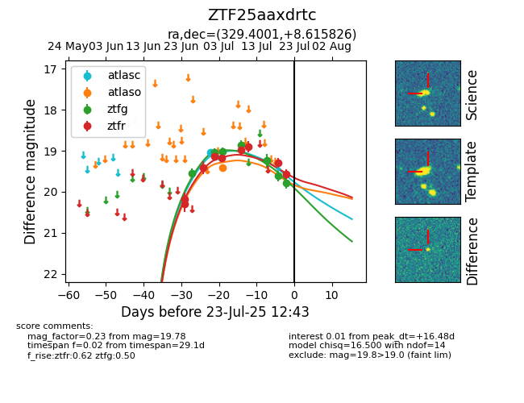

Target ZTF25aaxdrtc at 2025-07-23 12:43, see:
FINK: fink-portal.org/ZTF25aaxdrtc
Lasair: lasair-ztf.lsst.ac.uk/objects/ZTF25aaxdrtc
ALeRCE: alerce.online/object/ZTF25aaxdrtc
alt names
ZTF25aaxdrtc (ztf,fink)
coordinates:
equatorial (ra, dec) = (329.4001,+8.61583)
galactic (l, b) = (67.0393,-34.77874)
photometry
last atlasc=19.15, atlaso=19.41, ztfg=19.78, ztfr=19.58
2 atlasc, 1 atlaso, 7 ztfg, 9 ztfr detections
